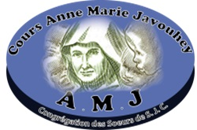

Mon parcours
J'ai fait mes études élémentaires et secondaires au collège Anne Marie Javouhey où j'ai décroché mon baccalauréat avec la mention bien. Par la suite, j'ai réussi le concours d'entrée au cycle DUT à l'École Supérieure Polytechnique de Dakar où j'ai effectué ma première année universitaire en génie informatique.
